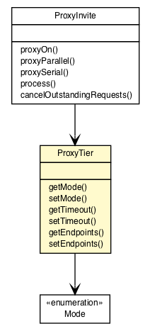

org.vorpal.blade.framework.proxy
Class ProxyTier

java.lang.Object
 org.vorpal.blade.framework.proxy.ProxyTier
org.vorpal.blade.framework.proxy.ProxyTier
- All Implemented Interfaces:
- java.io.Serializable
public class ProxyTier
- extends java.lang.Object
- implements java.io.Serializable
- See Also:
- Serialized Form
| Methods inherited from class java.lang.Object |
clone, equals, finalize, getClass, hashCode, notify, notifyAll, toString, wait, wait, wait |
ProxyTier
public ProxyTier()
ProxyTier
public ProxyTier(ProxyTier that)
getMode
public ProxyTier.Mode getMode()
setMode
public void setMode(ProxyTier.Mode mode)
getTimeout
public java.lang.Integer getTimeout()
setTimeout
public void setTimeout(java.lang.Integer timeout)
getEndpoints
public java.util.ArrayList<javax.servlet.sip.URI> getEndpoints()
setEndpoints
public void setEndpoints(java.util.ArrayList<javax.servlet.sip.URI> endpoints)
Copyright © 2013-2021 Vorpal Networks, LLC. All Rights Reserved.